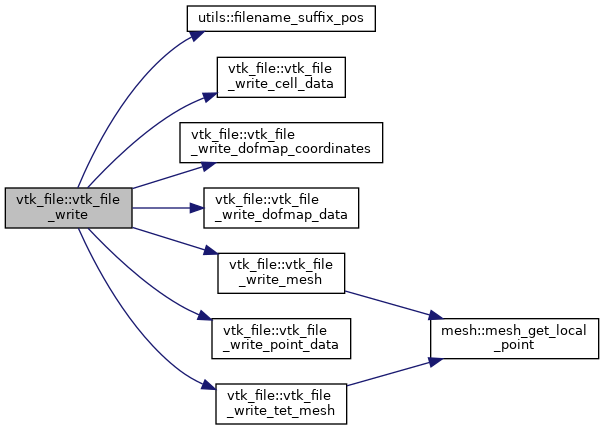

vtk_file Module Reference
Legacy VTK file format. More...
Data Types | |
| type | vtk_file_t |
| Interface for legacy VTK files. More... | |
Functions/Subroutines | |
| subroutine | vtk_file_write (this, data, t) |
| Write data in legacy VTK. More... | |
| subroutine | vtk_file_read (this, data) |
| subroutine | vtk_file_write_mesh (unit, msh) |
| Write a mesh in legacy VTK format. More... | |
| subroutine | vtk_file_write_cell_data (unit, mfld) |
| Write a mesh field mfld as cell data. More... | |
| subroutine | vtk_file_write_point_data (unit, fld) |
| Write a field fld as point data. More... | |
| subroutine | vtk_file_write_dofmap_coordinates (unit, dm) |
| Write xyz-coordinates of a dofmap dm as points. More... | |
| subroutine | vtk_file_write_dofmap_data (unit, dm) |
| Write a dofmap dm data as point data. More... | |
| subroutine | vtk_file_write_tet_mesh (unit, tet_msh) |
| Write a tetrahedral mesh in legacy VTK format. More... | |
Detailed Description
Legacy VTK file format.
This module defines interface to read/write legacy VTK file
Function/Subroutine Documentation
◆ vtk_file_read()
|
private |
Definition at line 128 of file vtk_file.f90.
◆ vtk_file_write()
| subroutine vtk_file::vtk_file_write | ( | class(vtk_file_t), intent(inout) | this, |
| class(*), intent(in), target | data, | ||
| real(kind=rp), intent(in), optional | t | ||
| ) |
Write data in legacy VTK.
Definition at line 60 of file vtk_file.f90.
Here is the call graph for this function:

◆ vtk_file_write_cell_data()
|
private |
Write a mesh field mfld as cell data.
Definition at line 165 of file vtk_file.f90.
Here is the caller graph for this function:
◆ vtk_file_write_dofmap_coordinates()
|
private |
Write xyz-coordinates of a dofmap dm as points.
Definition at line 230 of file vtk_file.f90.
Here is the caller graph for this function:
◆ vtk_file_write_dofmap_data()
|
private |
Write a dofmap dm data as point data.
Definition at line 259 of file vtk_file.f90.
Here is the caller graph for this function:
◆ vtk_file_write_mesh()
|
private |
Write a mesh in legacy VTK format.
Definition at line 134 of file vtk_file.f90.
Here is the call graph for this function:
Here is the caller graph for this function:
◆ vtk_file_write_point_data()
|
private |
Write a field fld as point data.
- Note
- High-order fields will be interpolated down to the low-order mesh
Definition at line 183 of file vtk_file.f90.
Here is the caller graph for this function:
◆ vtk_file_write_tet_mesh()
|
private |
Write a tetrahedral mesh in legacy VTK format.
Definition at line 298 of file vtk_file.f90.
Here is the call graph for this function:

Here is the caller graph for this function: